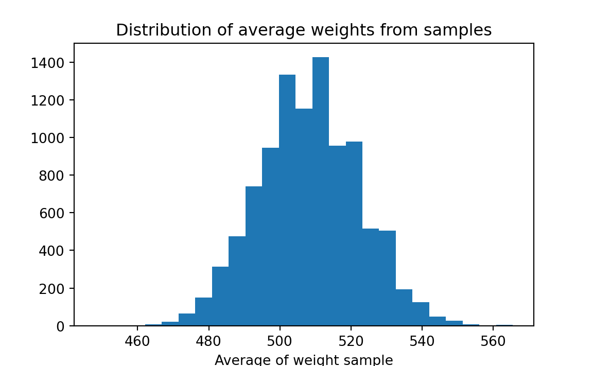
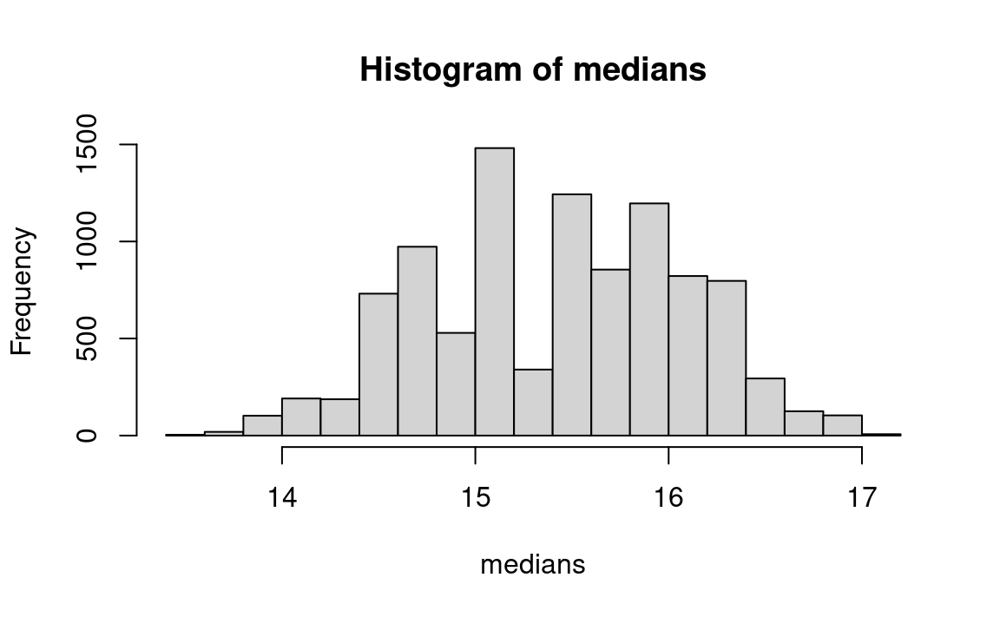
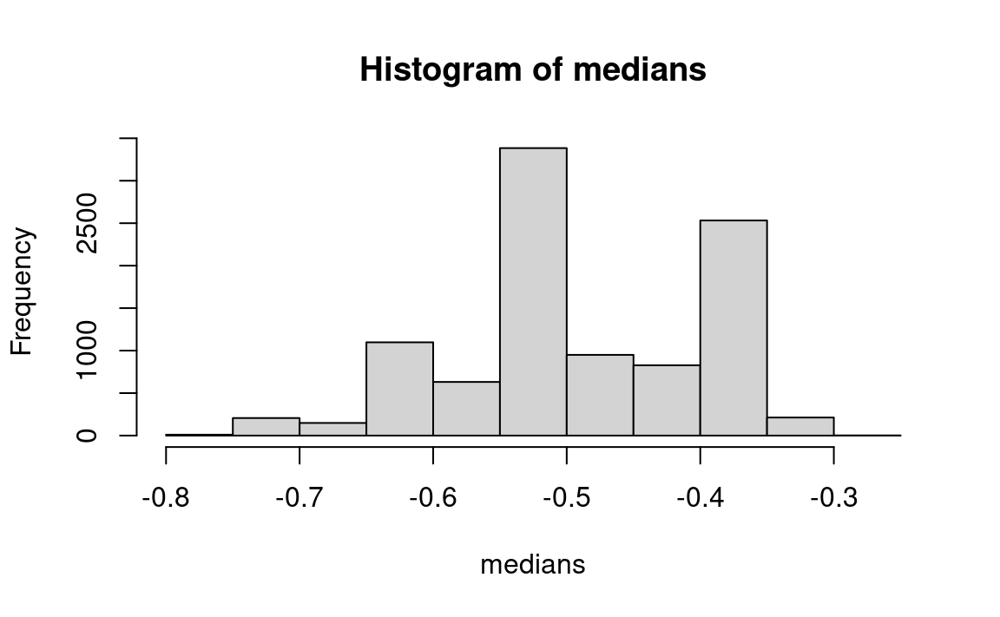
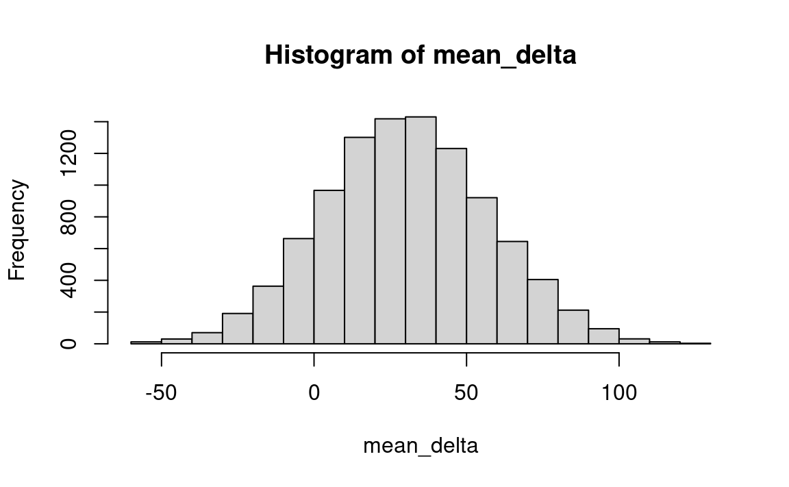
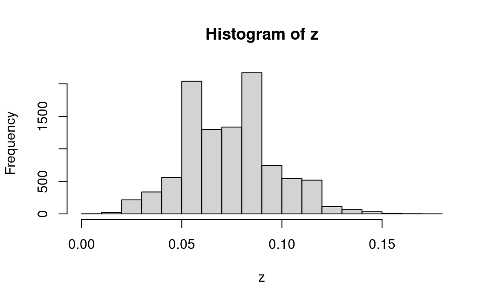
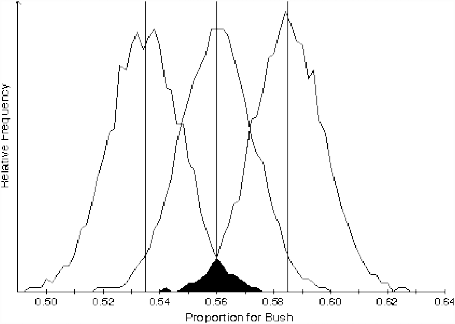
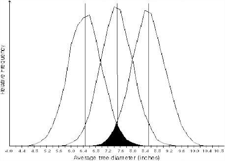

27 Confidence Intervals, Part 2: The Two Approaches to Estimating Confidence Intervals
There are two broad conceptual approaches to the question at hand: 1) Study the probability of various distances between the sample mean and the likeliest population mean; and 2) study the behavior of particular border universes. Computationally, both approaches often yield the same result, but their interpretations differ. Approach 1 follows the conventional logic although carrying out the calculations with resampling simulation.
27.1 Approach 1: The distance between sample and population mean
If the study of probability can tell us the probability that a given population will produce a sample with a mean at a given distance x from the population mean, and if a sample is an unbiased estimator of the population, then it seems natural to turn the matter around and interpret the same sort of data as telling us the probability that the estimate of the population mean is that far from the “actual” population mean. A fly in the ointment is our lack of knowledge of the dispersion, but we can safely put that aside for now. (See below, however.)
This first approach begins by assuming that the universe that actually produced the sample has the same amount of dispersion (but not necessarily the same mean) that one would estimate from the sample. One then produces (either with resampling or with Normal distribution theory) the distribution of sample means that would occur with repeated sampling from that designated universe with samples the size of the observed sample. One can then compute the distance between the (assumed) population mean and (say) the inner 45 percent of sample means on each side of the actually observed sample mean.
The crucial step is to shift vantage points. We look from the sample to the universe, instead of from a hypothesized universe to simulated samples (as we have done so far). This same interval as computed above must be the relevant distance as when one looks from the sample to the universe. Putting this algebraically, we can state (on the basis of either simulation or formal calculation) that for any given population S, and for any given distance \(d\) from its mean \(\mu\), that \(P((\mu - \bar{x}) < d) = \alpha\), where \(\bar{x}\) is a randomly generated sample mean and \(\alpha\) is the probability resulting from the simulation or calculation.
The above equation focuses on the deviation of various sample means (\(\bar{x}\)) from a stated population mean (\(\mu\)). But we are logically entitled to read the algebra in another fashion, focusing on the deviation of \(\mu\) from a randomly generated sample mean. This implies that for any given randomly generated sample mean we observe, the same probability (\(\alpha\)) describes the probability that \(\mu\) will be at a distance \(d\) or less from the observed \(\bar{x}\). (I believe that this is the logic underlying the conventional view of confidence intervals, but I have yet to find a clear-cut statement of it; in any case, it appears to be logically correct.)
To repeat this difficult idea in slightly different words: If one draws a sample (large enough to not worry about sample size and dispersion), one can say in advance that there is a probability \(p\) that the sample mean (\(\bar{x}\)) will fall within \(z\) standard deviations of the population mean (\(\mu\)). One estimates the population dispersion from the sample. If there is a probability \(p\) that \(\bar{x}\) is within \(z\) standard deviations of \(\mu\), then with probability \(p\), \(\mu\) must be within that same \(z\) standard deviations of \(\bar{x}\). To repeat, this is, I believe, the heart of the standard concept of the confidence interval, to the extent that there is thought through consensus on the matter.
So we can state for such populations the probability that the distance between the population and sample means will be \(d\) or less. Or with respect to a given distance, we can say that the probability that the population and sample means will be that close together is \(p\).
That is, we start by focusing on how much the sample mean diverges from the known population mean. But then — and to repeat once more this key conceptual step — we refocus our attention to begin with the sample mean and then discuss the probability that the population mean will be within a given distance. The resulting distance is what we call the “confidence interval.”
Please notice that the distribution (universe) assumed at the beginning of this approach did not include the assumption that the distribution is centered on the sample mean or anywhere else. It is true that the sample mean is used for purposes of reporting the location of the estimated universe mean . But despite how the subject is treated in the conventional approach, the estimated population mean is not part of the work of constructing confidence intervals. Rather, the calculations apply in the same way to all universes in the neighborhood of the sample (which are assumed, for the purpose of the work, to have the same dispersion). And indeed, it must be so, because the probability that the universe from which the sample was drawn is centered exactly at the sample mean is very small.
This independence of the confidence-intervals construction from the mean of the sample (and the mean of the estimated universe) is surprising at first, but after a bit of thought it makes sense.
In this first approach, as noted more generally above, we do not make estimates of the confidence intervals on the basis of any logical inference from any one particular sample to any one particular universe, because this cannot be done in principle ; it is the futile search for this connection that for decades roiled the brains of so many statisticians and now continues to trouble the minds of so many students. Instead, we investigate the behavior of (in this first approach) the universe that has a higher probability of producing the observed sample than does any other universe (in the absence of any additional evidence to the contrary), and whose characteristics are chosen on the basis of its resemblance to the sample. In this way the estimation of confidence intervals is like all other statistical inference: One investigates the probabilistic behavior of one or more hypothesized universes, the universe(s) being implicitly suggested by the sample evidence but not logically implied by that evidence. And there are no grounds for dispute about exactly what is being done — only about how to interpret the results.
One difficulty with the above approach is that the estimate of the population dispersion does not rest on sound foundations; this matter will be discussed later, but it is not likely to lead to a seriously misleading conclusion.
A second difficulty with this approach is in interpreting the result. What is the justification for focusing our attention on a universe centered on the sample mean? While this particular universe may be more likely than any other, it undoubtedly has a low probability. And indeed, the statement of the confidence intervals refers to the probabilities that the sample has come from universes other than the universe centered at the sample mean, and quite a distance from it.
My answer to this question does not rest on a set of meaningful mathematical axioms, and I assert that a meaningful axiomatic answer is impossible in principle. Rather, I reason that we should consider the behavior of this universe because other universes near it will produce much the same results, differing only in dispersion from this one, and this difference is not likely to be crucial; this last assumption is all-important, of course. True, we do not know what the dispersion might be for the “true” universe. But elsewhere (Simon, forthcoming) I argue that the concept of the “true universe” is not helpful — or maybe even worse than nothing — and should be forsworn. And we can postulate a dispersion for any other universe we choose to investigate. That is, for this postulation we unabashedly bring in any other knowledge we may have. The defense for such an almost-arbitrary move would be that this is a second-order matter relative to the location of the estimated universe mean, and therefore it is not likely to lead to serious error. (This sort of approximative guessing sticks in the throats of many trained mathematicians, of course, who want to feel an unbroken logic leading backwards into the mists of axiom formation. But the axioms themselves inevitably are chosen arbitrarily just as there is arbitrariness in the practice at hand, though the choice process for axioms is less obvious and more hallowed by having been done by the masterminds of the past. (See Simon (1998), on the necessity for judgment.) The absence of a sequence of equations leading from some first principles to the procedure described in the paragraph above is evidence of what is felt to be missing by those who crave logical justification. The key equation in this approach is formally unassailable, but it seems to come from nowhere.)
In the examples in the following chapter may be found computations for two population distributions — one binomial and one quantitative — of the histograms of the sample means produced with this procedure.
Operationally, we use the observed sample mean, together with an estimate of the dispersion from the sample, to estimate a mean and dispersion for the population. Then with reference to the sample mean we state a combination of a distance (on each side) and a probability pertaining to the population mean. The computational examples will illustrate this procedure.
Once we have obtained a numerical answer, we must decide how to interpret it. There is a natural and almost irresistible tendency to talk about the probability that the mean of the universe lies within the intervals, but this has proven confusing and controversial. Interpretation in terms of a repeated process is not very satisfying intuitively.1
In my view, it is not worth arguing about any “true” interpretation of these computations. One could sensibly interpret the computations in terms of the odds a decision maker, given the evidence, would reasonably offer about the relative probabilities that the sample came from one of two specified universes (one of them probably being centered on the sample); this does provide some information on reliability, but this procedure departs from the concept of confidence intervals.
27.1.1 Example: Counted Data: The Accuracy of Political Polls
Consider the reliability of a randomly selected 1988 presidential election poll, showing 840 intended votes for Bush and 660 intended votes for Dukakis out of 1500 (Wonnacott and Wonnacott 1990, 5). Let us work through the logic of this example.
- What is the question? Stated technically, what are the 95% confidence limits for the proportion of Bush supporters in the population? (The proportion is the mean of a binomial population or sample, of course.) More broadly, within which bounds could one confidently believe that the population proportion was likely to lie? At this stage of the work, we must already have translated the conceptual question (in this case, a decision-making question from the point of view of the candidates) into a statistical question. (See Chapter 20 on translating questions into statistical form.)
- What is the purpose to be served by answering this question? There is no sharp and clear answer in this case. The goal could be to satisfy public curiosity, or strategy planning for a candidate (though a national proportion is not as helpful for planning strategy as state data would be). A secondary goal might be to help guide decisions about the sample size of subsequent polls.
- Is this a “probability” or a “probability-statistics” question? The latter; we wish to infer from sample to population rather than the converse.
- Given that this is a statistics question: What is the form of the statistics question — confidence limits or hypothesis testing? Confidence limits.
- Given that the question is about confidence limits: What is the description of the sample that has been observed? a) The raw sample data — the observed numbers of interviewees are 840 for Bush and 660 for Dukakis — constitutes the best description of the universe. The statistics of the sample are the given proportions — 56 percent for Bush, 44 percent for Dukakis.
- Which universe? (Assuming that the observed sample is representative of the universe from which it is drawn, what is your best guess about the properties of the universe about whose parameter you wish to make statements? The best guess is that the population proportion is the sample proportion — that is, the population contains 56 percent Bush votes, 44 percent Dukakis votes.
- Possibilities for Bayesian analysis? Not in this case, unless you believe that the sample was biased somehow.
- Which parameter(s) do you wish to make statements about? Mean, median, standard deviation, range, interquartile range, other? We wish to estimate the proportion in favor of Bush (or Dukakis).
- Which symbols for the observed entities? Perhaps 56 green and 44 yellow balls, if a bucket is used, or “0” and “1” if the computer is used.
- Discrete or continuous distribution? In principle, discrete. (All distributions must be discrete in practice.)
- What values or ranges of values?* “0” or “1.”
- Finite or infinite? Infinite — the sample is small relative to the population.
- If the universe is what you guess it to be, for which samples do you wish to estimate the variation? A sample the same size as the observed poll.
Here one may continue either with resampling or with the conventional method. Everything done up to now would be the same whether continuing with resampling or with a standard parametric test.
27.2 Conventional Calculational Methods
Estimating the Distribution of Differences Between Sample and Population Means With the Normal Distribution.
In the conventional approach, one could in principle work from first principles with lists and sample space, but that would surely be too cumbersome. One could work with binomial proportions, but this problem has too large a sample for tree-drawing and quincunx techniques; even the ordinary textbook table of binomial coefficients is too small for this job. Calculating binomial coefficients also is a big job. So instead one would use the Normal approximation to the binomial formula.
(Note to the beginner: The distribution of means that we manipulate has the Normal shape because of the operation of the Law of Large Numbers (The Central Limit theorem). Sums and averages, when the sample is reasonably large, take on this shape even if the underlying distribution is not Normal. This is a truly astonishing property of randomly drawn samples — the distribution of their means quickly comes to resemble a “Normal” distribution, no matter the shape of the underlying distribution. We then standardize it with the standard deviation or other devices so that we can state the probability distribution of the sampling error of the mean for any sample of reasonable size.)
The exercise of creating the Normal shape empirically is simply a generalization of particular cases such as we will later create here for the poll by resampling simulation. One can also go one step further and use the formula of de Moivre-Laplace-Gauss to describe the empirical distributions, and to serve instead of the empirical distributions. Looking ahead now, the difference between resampling and the conventional approach can be said to be that in the conventional approach we simply plot the Gaussian distribution very carefully, and use a formula instead of the empirical histograms, afterwards putting the results in a standardized table so that we can read them quickly without having to recreate the curve each time we use it. More about the nature of the Normal distribution may be found in Simon (forthcoming).
All the work done above uses the information specified previously — the sample size of 1500, the drawing with replacement, the observed proportion as the criterion.
27.3 Confidence Intervals Empirically — With Resampling
Estimating the Distribution of Differences Between Sample and Population Means By Resampling
- What procedure to produce entities?: Random selection from bucket or computer.
- Simple (single step) or complex (multiple “if” drawings)?: Simple.
- What procedure to produce resamples? That is, with or without replacement? With replacement.
- Number of drawings observations in actual sample, and hence, number of drawings in resamples? 1500.
- What to record as result of each resample drawing? Mean, median, or whatever of resample? The proportion is what we seek.
- Stating the distribution of results : The distribution of proportions for the trial samples.
- Choice of confidence bounds? : 95%, two tails (choice made by the textbook that posed the problem).
- Computation of probabilities within chosen bounds : Read the probabilistic result from the histogram of results.
- Computation of upper and lower confidence bounds: Locate the values corresponding to the 2.5th and 97.5th percentile of the resampled proportions.
Because the theory of confidence intervals is so abstract (even with the resampling method of computation), let us now walk through this resampling demonstration slowly, using the conventional Approach 1 described previously. We first produce a sample, and then see how the process works in reverse to estimate the reliability of the sample, using the Bush-Dukakis poll as an example. The computer program follows below.
- Step 1: Draw a sample of 1500 voters from a universe that, based on the observed sample, is 56 percent for Bush, 44 percent for Dukakis. The first such sample produced by the computer happens to be 53 percent for Bush; it might have been 58 percent, or 55 percent, or very rarely, 49 percent for Bush.
- Step 2: Repeat step 1 perhaps 400 or 1000 times.
- Step 3: Estimate the distribution of means (proportions) of samples of size 1500 drawn from this 56-44 percent Bush- Dukakis universe; the resampling result is shown below.
- Step 4: In a fashion similar to what was done in steps 13, now compute the 95 percent confidence intervals for some other postulated universe mean — say 53% for Bush, 47% for Dukakis. This step produces a confidence interval that is not centered on the sample mean and the estimated universe mean, and hence it shows the independence of the procedure from that magnitude. And we now compare the breadth of the estimated confidence interval generated with the 53-47 percent universe against the confidence interval derived from the corresponding distribution of sample means generated by the “true” Bush-Dukakis population of 56 percent — 44 percent. If the procedure works well, the results of the two procedures should be similar.
Now we interpret the results using this first approach. The histogram shows the probability that the difference between the sample mean and the population mean — the error in the sample result — will be about 2.5 percentage points too low. It follows that about 47.5 percent (half of 95 percent) of the time, a sample like this one will be between the population mean and 2.5 percent too low. We do not know the actual population mean. But for any observed sample like this one, we can say that there is a 47.5 percent chance that the distance between it and the mean of the population that generated it is minus 2.5 percent or less.
Now a crucial step: We turn around the statement just above, and say that there is an 47.5 percent chance that the population mean is less than three percentage points higher than the mean of a sample drawn like this one, but at or above the sample mean. (And we do the same for the other side of the sample mean.) So to recapitulate: We observe a sample and its mean. We estimate the error by experimenting with one or more universes in that neighborhood, and we then give the probability that the population mean is within that margin of error from the sample mean.
27.3.1 Example: Measured Data Example — the Bootstrap
A feed merchant decides to experiment with a new pig ration — ration A — on twelve pigs. To obtain a random sample, he provides twelve customers (selected at random) with sufficient food for one pig. After 4 weeks, the 12 pigs experience an average gain of 508 ounces. The weight gain of the individual pigs are as follows: 496, 544, 464, 416, 512, 560, 608, 544, 480, 466, 512, 496.
The merchant sees that the ration produces results that are quite variable (from a low of 466 ounces to a high of 560 ounces) and is therefore reluctant to advertise an average weight gain of 508 ounces. He speculates that a different sample of pigs might well produce a different average weight gain.
Unfortunately, it is impractical to sample additional pigs to gain additional information about the universe of weight gains. The merchant must rely on the data already gathered. How can these data be used to tell us more about the sampling variability of the average weight gain?
Recalling that all we know about the universe of weight gains is the sample we have observed, we can replicate that sample millions of times, creating a “pseudo-universe” that embodies all our knowledge about the real universe. We can then draw additional samples from this pseudo-universe and see how they behave.
More specifically, we replicate each observed weight gain millions of times — we can imagine writing each result that many times on separate pieces of paper — then shuffle those weight gains and pick out a sample of 12. Average the weight gain for that sample, and record the result. Take repeated samples, and record the result for each. We can then make a histogram of the results; it might look something like this:
Though we do not know the true average weight gain, we can use this histogram to estimate the bounds within which it falls. The merchant can consider various weight gains for advertising purposes, and estimate the probability that the true weight gain falls below the value. For example, he might wish to advertise a weight gain of 500 ounces. Examining the histogram, we see that about 36% of our samples yielded weight gains less than 500 ounces. The merchant might wish to choose a lower weight gain to advertise, to reduce the risk of overstating the effectiveness of the ration.
This illustrates the “bootstrap” method. By re-using our original sample many times (and using nothing else), we are able to make inferences about the population from which the sample came. This problem would conventionally be addressed with the “t-test.”
27.3.2 Example: Measured Data Example: Estimating Tree Diameters
What is the question? A horticulturist is experimenting with a new type of tree. She plants 20 of them on a plot of land, and measures their trunk diameter after two years. She wants to establish a 90% confidence interval for the population average trunk diameter. For the data given below, calculate the mean of the sample and calculate (or describe a simulation procedure for calculating) a 90% confidence interval around the mean. Here are the 20 diameters, in centimeters and in no particular order (Table 27.1):
Table 27.1: Tree Diameters, in Centimeters 8.5 7.6 9.3 5.5 11.4 6.9 6.5 12.9 8.7 4.8 4.2 8.1 6.5 5.8 6.7 2.4 11.1 7.1 8.8 7.2 What is the purpose to be served by answering the question? Either research & development, or pure science.
Is this a “probability” or a “statistics” question? Statistics.
What is the form of the statistics question? Confidence limits.
What is the description of the sample that has been observed? The raw data as shown above.
Statistics of the sample ? Mean of the tree data.
Which universe? Assuming that the observed sample is representative of the universe from which it is drawn, what is your best guess about the properties of the universe whose parameter you wish to make statements about? Answer: The universe is like the sample above but much, much bigger. That is, in the absence of other information, we imagine this “bootstrap” universe as a collection of (say) one million trees of 8.5 centimeters width, one million of 7.2 centimeters, and so on. We’ll see in a moment that the device of sampling with replacement makes it unnecessary for us to work with such a large universe; by replacing each element after we draw it in a resample, we achieve the same effect as creating an almost-infinite universe from which to draw the resamples. (Are there possibilities for Bayesian analysis?) No Bayesian prior information will be included.
Which parameter do you wish to make statements about? The mean.
Which symbols for the observed entities? Cards or computer entries with numbers 8.5…7.2, sample of an infinite size.
If the universe is as guessed at, for which samples do you wish to estimate the variation? Samples of size 20.
Here one may continue with the conventional method. Everything up to now is the same whether continuing with resampling or with a standard parametric test. The information listed above is the basis for a conventional test.
Continuing with resampling:
- What procedure will be used to produce the trial entities? Random selection: simple (single step), not complex (multiple “if”) sample drawings).
- What procedure to produce resamples? With replacement. As noted above, sampling with replacement allows us to forego creating a very large bootstrap universe; replacing the elements after we draw them achieves the same effect as would an infinite universe.
- Number of drawings? 20 trees
- What to record as result of resample drawing? The mean.
- How to state the distribution of results? See histogram.
- Choice of confidence bounds? 90%, two-tailed.
- Computation of values of the resample statistic corresponding to chosen confidence bounds? Read from histogram.
As has been discussed in Chapter 19, it often is more appropriate to work with the median than with the mean. One reason is that the median is not so sensitive to the extreme observations as is the mean. Another reason is that one need not assume a Normal distribution for the universe under study: this consideration affects conventional statistics but usually does not affect resampling, but it is worth keeping mind when a statistician is making a choice between a parametric (that is, Normal-based) and a non-parametric procedure.
27.3.3 Example: Determining a Confidence Interval for the Median Aluminum Content in Theban Jars
Data for the percentages of aluminum content in a sample of 18 ancient Theban jars (Catling and Jones 1977) are as follows, arranged in ascending order: 11.4, 13.4, 13.5, 13.8, 13.9, 14.4, 14.5, 15.0, 15.1, 15.8, 16.0, 16.3, 16.5, 16.9, 17.0, 17.2, 17.5, 19.0. Consider now putting a confidence interval around the median of 15.45 (halfway between the middle observations 15.1 and 15.8).
One may simply estimate a confidence interval around the median with a bootstrap procedure by substituting the median for the mean in the usual bootstrap procedure for estimating a confidence limit around the mean, as follows:
data = c(11.4, 13.4, 13.5, 13.8, 13.9, 14.4, 14.5,
15.0, 15.1, 15.8, 16.0, 16.3, 16.5, 16.9,
17.0, 17.2, 17.5, 19.0)
observed_median <- median(data)
n <- 10000
medians <- numeric(n)
for (i in 1:n) {
sample <- sample(data, replace=TRUE)
medians[i] <- median(sample)
}
hist(medians)
message('Observed median aluminum content: ', observed_median)Observed median aluminum content: 15.45pp <- quantile(medians, c(0.025, 0.975))
message('Estimate of 95 percent confidence interval: ', pp[1], ' - ', pp[2])Estimate of 95 percent confidence interval: 14.15 - 16.6
(This problem would be approached conventionally with a binomial procedure leading to quite wide confidence intervals (Deshpande, Gore, and Shanubhogue 1995, 32)).
27.3.4 Example: Confidence Interval for the Median Price Elasticity of Demand for Cigarettes
The data for a measure of responsiveness of demand to a price change (the “elasticity” — percent change in demand divided by percent change in price) are shown for cigarette price changes as follows (Table 27.2). I (JLS) computed the data from cigarette sales data preceding and following a tax change in a state (Lyon and Simon 1968).
| 1.725 | 1.139 | .957 | .863 | .802 | .517 | .407 | .304 |
| .204 | .125 | .122 | .106 | .031 | -.032 | -.1 | -.142 |
| -.174 | -.234 | -.240 | -.251 | -.277 | -.301 | -.302 | -.302 |
| -.307 | -.328 | -.329 | -.346 | -.357 | -.376 | -.377 | -.383 |
| -.385 | -.393 | -.444 | -.482 | -.511 | -.538 | -.541 | -.549 |
| -.554 | -.600 | -.613 | -.644 | -.692 | -.713 | -.724 | -.734 |
| -.749 | -.752 | -.753 | -.766 | -.805 | -.866 | -.926 | -.971 |
| -.972 | -.975 | -1.018 | -1.024 | -1.066 | -1.118 | -1.145 | -1.146 |
| -1.157 | -1.282 | -1.339 | -1.420 | -1.443 | -1.478 | -2.041 | -2.092 |
| -7.100 |
The positive observations (implying an increase in demand when the price rises) run against all theory, but can be considered to be the result simply of measurement errors, and treated as they stand. Aside from this minor complication, the reader may work this example similarly to the case of the Theban jars. Consider this program:
data = c(
1.725, 1.139, 0.957, 0.863, 0.802, 0.517, 0.407, 0.304,
0.204, 0.125, 0.122, 0.106, 0.031, -0.032, -0.1, -0.142,
-0.174, -0.234, -0.240, -0.251, -0.277, -0.301, -0.302, -0.302,
-0.307, -0.328, -0.329, -0.346, -0.357, -0.376, -0.377, -0.383,
-0.385, -0.393, -0.444, -0.482, -0.511, -0.538, -0.541, -0.549,
-0.554, -0.600, -0.613, -0.644, -0.692, -0.713, -0.724, -0.734,
-0.749, -0.752, -0.753, -0.766, -0.805, -0.866, -0.926, -0.971,
-0.972, -0.975, -1.018, -1.024, -1.066, -1.118, -1.145, -1.146,
-1.157, -1.282, -1.339, -1.420, -1.443, -1.478, -2.041, -2.092,
-7.100)
data_median <- median(data)
n <- 10000
medians <- numeric(n)
for (i in 1:n) {
sample <- sample(data, replace=TRUE)
medians[i] <- median(sample)
}
hist(medians)
message('Observed median elasticity: ', data_median)Observed median elasticity: -0.511pp <- quantile(medians, c(0.025, 0.975))
message('Estimate of 95 percent confidence interval: ',
pp[1], ' - ', pp[2])Estimate of 95 percent confidence interval: -0.692 - -0.357
27.4 Measured Data Example: Confidence Intervals For a Difference Between Two Means
This is another example from the mice data.
Returning to the data on the survival times of the two groups of mice in Section 24.0.4. It is the view of this book that confidence intervals should be calculated for a difference between two groups only if one is reasonably satisfied that the difference is not due to chance. Some statisticians might choose to compute a confidence interval in this case nevertheless, some because they believe that the confidence-interval machinery is more appropriate to deciding whether the difference is the likely outcome of chance than is the machinery of a hypothesis test in which you are concerned with the behavior of a benchmark or null universe. So let us calculate a confidence interval for these data, which will in any case demonstrate the technique for determining a confidence interval for a difference between two samples.
Our starting point is our estimate for the difference in mean survival times between the two samples — 30.63 days. We ask “How much might this estimate be in error? If we drew additional samples from the control universe and additional samples from the treatment universe, how much might they differ from this result?”
We do not have the ability to go back to these universes and draw more samples, but from the samples themselves we can create hypothetical universes that embody all that we know about the treatment and control universes. We imagine replicating each element in each sample millions of times to create a hypothetical control universe and (separately) a hypothetical treatment universe. Then we can draw samples (separately) from these hypothetical universes to see how reliable is our original estimate of the difference in means (30.63 days).
Actually, we use a shortcut — instead of copying each sample element a million times, we simply replace it after drawing it for our resample, thus creating a universe that is effectively infinite.
Here are the steps:
- Step 1: Consider the two samples separately as the relevant universes.
- Step 2: Draw a sample of 7 with replacement from the treatment group and calculate the mean.
- Step 3: Draw a sample of 9 with replacement from the control group and calculate the mean.
- Step 4: Calculate the difference in means (treatment minus control) & record.
- Step 5: Repeat steps 2-4 many times.
- Step 6: Review the distribution of resample means; the 5th and 95th percentiles are estimates of the endpoints of a 90 percent confidence interval.
Here is a R example:
treatment = c(94, 38, 23, 197, 99, 16, 141)
control = c(52, 10, 40, 104, 51, 27, 146, 30, 46)
observed_diff <- mean(treatment) - mean(control)
n <- 10000
mean_delta <- numeric(n)
for (i in 1:n) {
treatment_sample <- sample(treatment, replace=TRUE)
control_sample <- sample(control, replace=TRUE)
mean_delta[i] <- mean(treatment_sample) - mean(control_sample)
}
hist(mean_delta)
message('Observed difference in means: ', round(observed_diff, 2))Observed difference in means: 30.63pp <- quantile(mean_delta, c(0.05, 0.95))
message('Estimate of 90 percent confidence interval: ',
round(pp[1], 2), ' - ', round(pp[2], 2))Estimate of 90 percent confidence interval: -13.76 - 75.43
Interpretation: This means that one can be 90 percent confident that the mean of the difference (which is estimated to be 30.635) falls between -13.763) and 75.429). So the reliability of the estimate of the mean is very small.
27.5 Count Data Example: Confidence Limit on a Proportion, Framingham Cholesterol Data
The Framingham cholesterol data were used in Section 21.2.6 to illustrate the first classic question in statistical inference — interpretation of sample data for testing hypotheses. Now we use the same data for the other main theme in statistical inference — the estimation of confidence intervals. Indeed, the bootstrap method discussed above was originally devised for estimation of confidence intervals. The bootstrap method may also be used to calculate the appropriate sample size for experiments and surveys, another important topic in statistics.
Consider for now just the data for the sub-group of 135 high-cholesterol men in Table 21.4. Our second classic statistical question is as follows: How much confidence should we have that if we were to take a much larger sample than was actually obtained, the sample mean (that is, the proportion 10/135 = .07) would be in some close vicinity of the observed sample mean? Let us first carry out a resampling procedure to answer the questions, waiting until afterwards to discuss the logic of the inference.
- Construct a bucket containing 135 balls — 10 red (infarction) and 125 green (no infarction) to simulate the universe as we guess it to be.
- Mix, choose a ball, record its color, replace it, and repeat 135 times (to simulate a sample of 135 men).
- Record the number of red balls among the 135 balls drawn.
- Repeat steps 2-3 perhaps 10000 times, and observe how much the total number of reds varies from sample to sample. We arbitrarily denote the boundary lines that include 47.5 percent of the hypothetical samples on each side of the sample mean as the 95 percent “confidence limits” around the mean of the actual population.
Here is a R program:
men <- rep(c(1, 0), c(10, 125))
n <- 10000
z <- numeric(n)
for (i in 1:n) {
sample <- sample(men, replace=TRUE)
infarctions <- sum(sample == 1)
z[i] <- infarctions / 135
}
hist(z)
pp <- quantile(z, c(0.025, 0.975))
message('Estimate of 95 percent confidence interval: ',
round(pp[1], 2), ' - ', round(pp[2], 2))Estimate of 95 percent confidence interval: 0.04 - 0.12
(The result is the 95 percent confidence interval, enclosing 95 percent of the resample results)
The variation in the histogram above highlights the fact that a sample containing only 10 cases of infarction is very small, and the number of observed cases — or the proportion of cases — necessarily varies greatly from sample to sample. Perhaps the most important implication of this statistical analysis, then, is that we badly need to collect additional data.
Again, this is a classic problem in confidence intervals, found in all subject fields. The language used in the cholesterol-infarction example is exactly the same as the language used for the Bush-Dukakis poll above except for labels and numbers.
As noted above, the philosophic logic of confidence intervals is quite deep and controversial, less obvious than for the hypothesis test. The key idea is that we can estimate for any given universe the probability P that a sample’s mean will fall within any given distance D of the universe’s mean; we then turn this around and assume that if we know the sample mean, the probability is P that the universe mean is within distance D of it. This inversion is more slippery than it may seem. But the logic is exactly the same for the formulaic method and for resampling. The only difference is how one estimates the probabilities — either with a numerical resampling simulation (as here), or with a formula or other deductive mathematical device (such as counting and partitioning all the possibilities, as Galileo did when he answered a gambler’s question about three dice). And when one uses the resampling method, the probabilistic calculations are the least demanding part of the work. One then has mental capacity available to focus on the crucial part of the job — framing the original question soundly, choosing a model for the facts so as to properly resemble the actual situation, and drawing appropriate inferences from the simulation.
27.6 Approach 2: Probability of various universes producing this sample
A second approach to the general question of estimate accuracy is to analyze the behavior of a variety of universes centered at other points on the line, rather than the universe centered on the sample mean. One can ask the probability that a distribution centered away from the sample mean, with a given dispersion, would produce (say) a 10-apple scatter having a mean as far away from the given point as the observed sample mean. If we assume the situation to be symmetric, we can find a point at which we can say that a distribution centered there would have only a (say) 5 percent chance of producing the observed sample. And we can also say that a distribution even further away from the sample mean would have an even lower probability of producing the given sample. But we cannot turn the matter around and say that there is any particular chance that the distribution that actually produced the observed sample is between that point and the center of the sample.
Imagine a situation where you are standing on one side of a canyon, and you are hit by a baseball, the only ball in the vicinity that day. Based on experiments, you can estimate that a baseball thrower who you see standing on the other side of the canyon has only a 5 percent chance of hitting you with a single throw. But this does not imply that the source of the ball that hit you was someone else standing in the middle of the canyon, because that is patently impossible. That is, your knowledge about the behavior of the “boundary” universe does not logically imply anything about the existence and behavior of any other universes. But just as in the discussion of testing hypotheses, if you know that one possibility is unlikely, it is reasonable that as a result you will draw conclusions about other possibilities in the context of your general knowledge and judgment.
We can find the “boundary” distribution(s) we seek if we a) specify a measure of dispersion, and b) try every point along the line leading away from the sample mean, until we find that distribution that produces samples such as that observed with a (say) 5 percent probability or less.
To estimate the dispersion, in many cases we can safely use an estimate based on the sample dispersion, using either resampling or Normal distribution theory. The hardest cases for resampling are a) a very small sample of data, and b) a proportion near 0 or near 1.0 (because the presence or absence in the sample of a small number of observations can change the estimate radically, and therefore a large sample is needed for reliability). In such situations one should use additional outside information, or Normal distribution theory, or both.
We can also create a confidence interval in the following fashion: We can first estimate the dispersion for a universe in the general neighborhood of the sample mean, using various devices to be “conservative,” if we like.2 Given the estimated dispersion, we then estimate the probability distribution of various amounts of error between observed sample means and the population mean. We can do this with resampling simulation as follows: a) Create other universes at various distances from the sample mean, but with other characteristics similar to the universe that we postulate for the immediate neighborhood of the sample, and b) experiment with those universes. One can also apply the same logic with a more conventional parametric approach, using general knowledge of the sampling distribution of the mean, based on Normal distribution theory or previous experience with resampling. We shall not discuss the latter method here.
As with approach 1, we do not make any probability statements about where the population mean may be found. Rather, we discuss only what various hypothetical universes might produce , and make inferences about the “actual” population’s characteristics by comparison with those hypothesized universes.
If we are interested in (say) a 95 percent confidence interval, we want to find the distribution on each side of the sample mean that would produce a sample with a mean that far away only 2.5 percent of the time (2 * .025 = 1-.95). A shortcut to find these “border distributions” is to plot the sampling distribution of the mean at the center of the sample, as in Approach 1. Then find the (say) 2.5 percent cutoffs at each end of that distribution. On the assumption of equal dispersion at the two points along the line, we now reproduce the previously-plotted distribution with its centroid (mean) at those 2.5 percent points on the line. The new distributions will have 2.5 percent of their areas on the other side of the mean of the sample.
27.6.1 Example: Approach 2 for Counted Data: the Bush-Dukakis Poll
Let’s implement Approach 2 for counted data, using for comparison the Bush-Dukakis poll data discussed earlier in the context of Approach 1.
We seek to state, for universes that we select on the basis that their results will interest us, the probability that they (or it, for a particular universe) would produce a sample as far or farther away from the mean of the universe in question as the mean of the observed sample — 56 percent for Bush. The most interesting universe is that which produces such a sample only about 5 percent of the time, simply because of the correspondence of this value to a conventional breakpoint in statistical inference. So we could experiment with various universes by trial and error to find this universe.
We can learn from our previous simulations of the Bush — Dukakis poll in Approach 1 that about 95 percent of the samples fall within .025 on either side of the sample mean (which we had been implicitly assuming is the location of the population mean). If we assume (and there seems no reason not to) that the dispersions of the universes we experiment with are the same, we will find (by symmetry) that the universe we seek is centered on those points .025 away from .56, or .535 and .585.
From the standpoint of Approach 2, then, the conventional sample formula that is centered at the mean can be considered a shortcut to estimating the boundary distributions. We say that the boundary is at the point that centers a distribution which has only a (say) 2.5 percent chance of producing the observed sample; it is that distribution which is the subject of the discussion, and not the distribution which is centered at \(\mu = \bar{x}\). Results of these simulations are shown in Figure 27.1.

About these distributions centered at .535 and .585 — or more importantly for understanding an election situation, the universe centered at .535 — one can say: Even if the “true” value is as low as 53.5 percent for Bush, there is only a 2 ½ percent chance that a sample as high as 56 percent pro-Bush would be observed. (The values of a 2 ½ percent probability and a 2 ½ percent difference between 56 percent and 53.5 percent coincide only by chance in this case.) It would be even more revealing in an election situation to make a similar statement about the universe located at 50-50, but this would bring us almost entirely within the intellectual ambit of hypothesis testing.
To restate, then: Moving progressively farther away from the sample mean, we can eventually find a universe that has only some (any) specified small probability of producing a sample like the one observed. One can then say that this point represents a “limit” or “boundary” so that the interval between it and the sample mean may be called a confidence interval.
27.6.2 Example: Approach 2 for Measured Data: The Diameters of Trees
To implement Approach 2 for measured data, one may proceed exactly as with Approach 1 above except that the output of the simulation with the sample mean as midpoint will be used for guidance about where to locate trial universes for Approach 2. The results for the tree diameter data (Table 27.1) are shown in Figure 27.2.

27.7 Interpretation of Approach 2
Now to interpret the results of the second approach: Assume that the sample is not drawn in a biased fashion (such as the wind blowing all the apples in the same direction), and that the population has the same dispersion as the sample. We can then say that distributions centered at the two endpoints of the 95 percent confidence interval (each of them including a tail in the direction of the observed sample mean with 2.5 percent of the area), or even further away from the sample mean, will produce the observed sample only 5 percent of the time or less .
The result of the second approach is more in the spirit of a hypothesis test than of the usual interpretation of confidence intervals. Another statement of the result of the second approach is: We postulate a given universe — say, a universe at (say) the two-tailed 95 percent boundary line. We then say: The probability that the observed sample would be produced by a universe with a mean as far (or further) from the observed sample’s mean as the universe under investigation is only 2.5 percent. This is similar to the probability value interpretation of a hypothesis-test framework. It is not a direct statement about the location of the mean of the universe from which the sample has been drawn. But it is certainly reasonable to derive a betting-odds interpretation of the statement just above, to wit: The chances are 2½ in 100 (or, the odds are 2½ to 97½ ) that a population located here would generate a sample with a mean as far away as the observed sample. And it would seem legitimate to proceed to the further betting-odds statement that (assuming we have no additional information) the odds are 97 ½ to 2 ½ that the mean of the universe that generated this sample is no farther away from the sample mean than the mean of the boundary universe under discussion. About this statement there is nothing slippery, and its meaning should not be controversial.
Here again the tactic for interpreting the statistical procedure is to restate the facts of the behavior of the universe that we are manipulating and examining at that moment. We use a heuristic device to find a particular distribution — the one that is at (say) the 97 ½ –2 ½ percent boundary — and simply state explicitly what the distribution tells us implicitly: The probability of this distribution generating the observed sample (or a sample even further removed) is 2 ½ percent. We could go on to say (if it were of interest to us at the moment) that because the probability of this universe generating the observed sample is as low as it is, we “reject” the “hypothesis” that the sample came from a universe this far away or further. Or in other words, we could say that because we would be very surprised if the sample were to have come from this universe, we instead believe that another hypothesis is true. The “other” hypothesis often is that the universe that generated the sample has a mean located at the sample mean or closer to it than the boundary universe.
The behavior of the universe at the 97 ½ –2 ½ percent boundary line can also be interpreted in terms of our “confidence” about the location of the mean of the universe that generated the observed sample. We can say: At this boundary point lies the end of the region within which we would bet 97 ½ to 2 ½ that the mean of the universe that generated this sample lies to the (say) right of it.
As noted in the preview to this chapter, we do not learn about the reliability of sample estimates of the population mean (and other parameters) by logical inference from any one particular sample to any one particular universe, because in principle this cannot be done . Instead, in this second approach we investigate the behavior of various universes at the borderline of the neighborhood of the sample, those universes being chosen on the basis of their resemblances to the sample. We seek, for example, to find the universes that would produce samples with the mean of the observed sample less than (say) 5 percent of the time. In this way the estimation of confidence intervals is like all other statistical inference: One investigates the probabilistic behavior of hypothesized universes, the hypotheses being implicitly suggested by the sample evidence but not logically implied by that evidence.
Approaches 1 and 2 may (if one chooses) be seen as identical conceptually as well as (in many cases) computationally (except for the asymmetric distributions mentioned earlier). But as I see it, the interpretation of them is rather different, and distinguishing them helps one’s intuitive understanding.
27.8 Exercises
You will find solutions for problems in Chapter 32.
27.8.1 Exercise: unemployment percentage
::: {.notebook name=“unemployment_percent_exercise” title=“Unemployment percent exercise”}
In a sample of 200 people, 7 percent are found to be unemployed. Determine a 95 percent confidence interval for the true population proportion.
# Your code here.See {Section 32.3}.
27.8.2 Exercise: battery lifetime
Start of battery_lifetime_exercise notebook
A sample of 20 batteries is tested, and the average lifetime is 28.85 months. Establish a 95 percent confidence interval for the true average value. The sample values (lifetimes in months) are listed below.
lifetimes <- c(30, 32, 31, 28, 31, 29, 29, 24, 30, 31,
28, 28, 32, 31, 24, 23, 31, 27, 27, 31)
message('Mean is: ', mean(lifetimes))Mean is: 28.85End of battery_lifetime_exercise.Rmd notebook
See Section 32.4.
27.8.3 Exercise: optical density
Start of optical_density_exercise notebook
Suppose we have 10 measurements of Optical Density on a batch of HIV negative control samples:
density <- c(.02, .026, .023, .017, .022, .019, .018, .018, .017, .022)Derive a 95 percent confidence interval for the sample mean. Are there enough measurements to produce a satisfactory answer?
End of optical_density_exercise.Rmd notebook
See: Section 32.5.